The Impact of Personalized AI Response Suggestions on Content Creators' Direct Messaging was conditionally accepted to ACM GROUP 2027 🎉
Hi! I am a second-year PhD student in Information Science at Cornell University, advised by Susan Fussell in the Communication and Collaborative Technologies Lab.
My research lies at the intersection of human-AI interaction, social computing, and accessible computing. I study AI as a social actor, exploring how AI takes on social roles in communication, creative work, and online information ecosystems. I also design AI systems that better support accessibility and human cognition.
Before Cornell, I studied Quantitative Social Analysis at the Hong Kong University of Science and Technology, with a minor in Psychological and Behavioral Science.
News
Two collaborative papers on AI-supported claim verification were accepted to EMNLP 2026 Main and ICWSM 2027: CoVer: Conflict-Aware Claim Verification and Commenotes: Synthesizing Organic Comments to Support Community-Based Fact-Checking. 🔍
To Understand Changes of Emotion and Cognitive Efforts in VR was accepted to ISMAR 2026 and conditionally accepted to IEEE TVCG journal 🌟
Balancing Safety and Autonomy: Accessibility-Oriented Interventions in Generative AI for Cognitive Impairment was accepted to ASSETS 2026 ✴️
I was accepted to the 2026 DLI Conscientious Tech Design Workshop, and will be participating this summer! 💡
Selected for the 2026 Siegel PiTech PhD Impact Fellowship and working in New York City this summer 🗽
Not Just Me and My To-Do List: Understanding Challenges of Task Management for Adults with ADHD and the Need for AI-Augmented Social Scaffolds was accepted to CSCW 2026 🎉
Estimating Mental Effort in Virtual Reality Using Multimodal Biosignals was accepted to IEEE VR 2026 🥽
Characterizing Unintended Consequences of GUI Agents For Web Browsing was accepted to CHI 2026 🇪🇸
SituFont: A Just-in-Time Adaptive Intervention Interface for Enhancing Mobile Readability in Situational Visual Impairments was accepted to CHI 2026 🇪🇸
Examining the Impact of Label Detail and Content Stakes on User Perceptions of AI-Generated Images on Social Media was accepted as a CSCW 2025 poster and presented in Bergen ❄️
Started my PhD in Information Science at Cornell 🍂
Publications
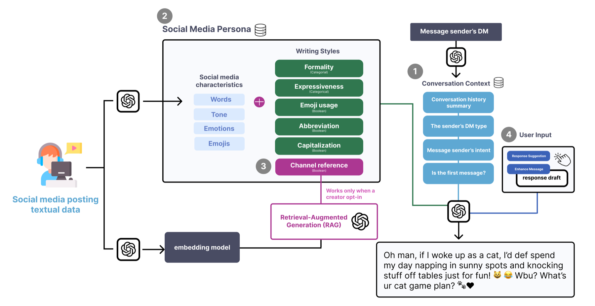
GROUP 2027 · To appear
The Impact of Personalized AI Response Suggestions on Content Creators' Direct Messaging
This work examines how personalized AI response suggestions shape content creators' communication through direct messages.
Publication link forthcoming
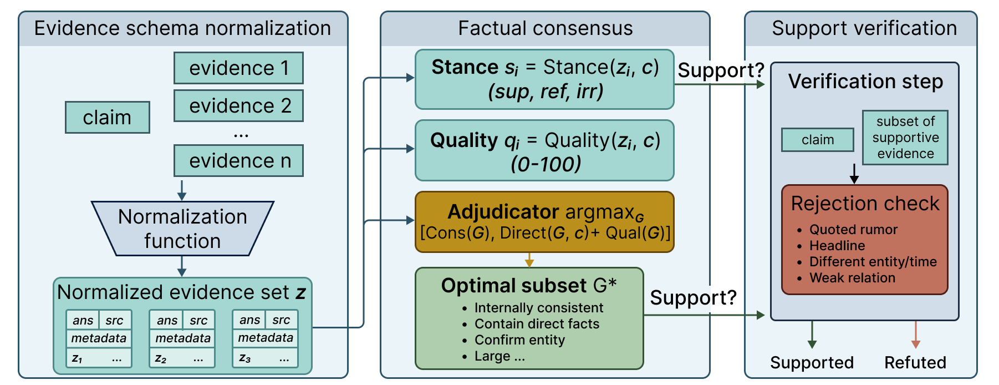
EMNLP 2026 Main · To appear
CoVer: Conflict-Aware Claim Verification
CoVer supports claim verification when evidence sources conflict, prioritizing factual consensus over misleading signals.
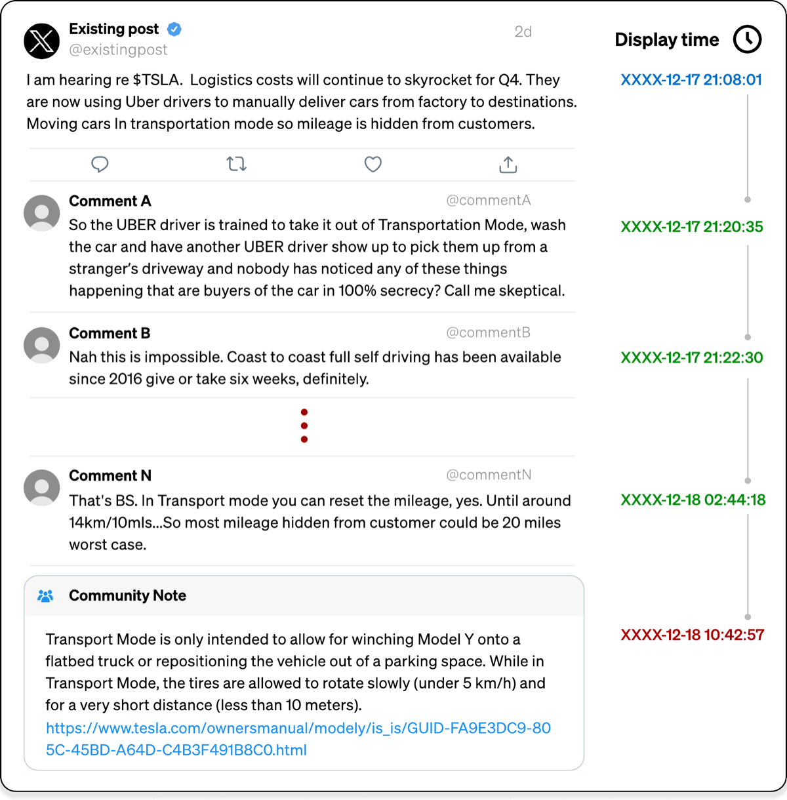
ICWSM 2027 · To appear
Commenotes: Synthesizing Organic Comments to Support Community-Based Fact-Checking
Commenotes synthesizes organic social-media comments into timely, community-grounded fact-checking notes.
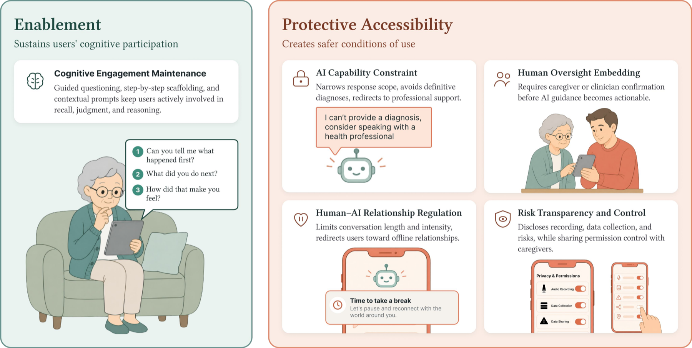
ASSETS 2026 · To appear
Balancing Safety and Autonomy: Accessibility-Oriented Interventions in Generative AI for Cognitive Impairment
This work examines how generative AI interventions can protect users with cognitive impairment without unnecessarily restricting their autonomy.
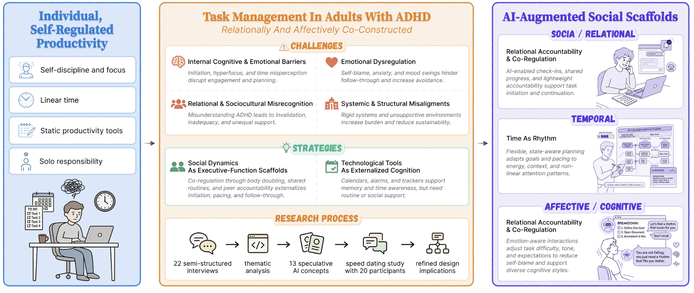
CSCW 2026 · To appear
"Not Just Me and My To-Do List": Understanding Challenges of Task Management for Adults with ADHD and the Need for AI-Augmented Social Scaffolds
This paper shows how task management among adults with ADHD is relational and co-constructed, motivating socially aware AI systems for co-regulation and nonlinear attention rhythms.
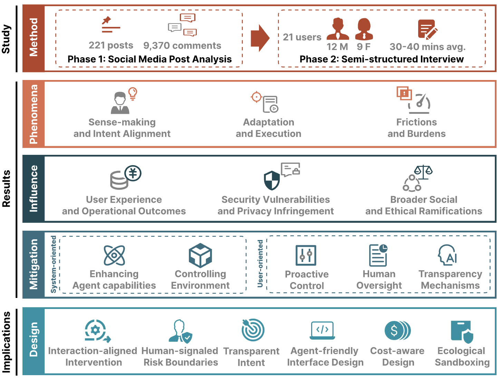
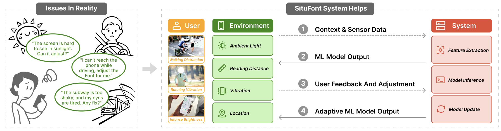
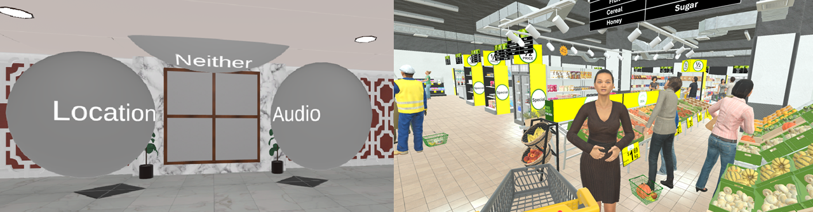
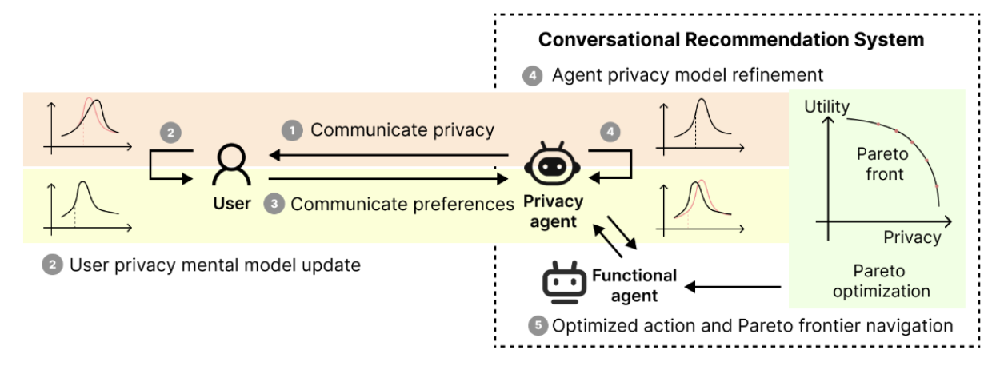
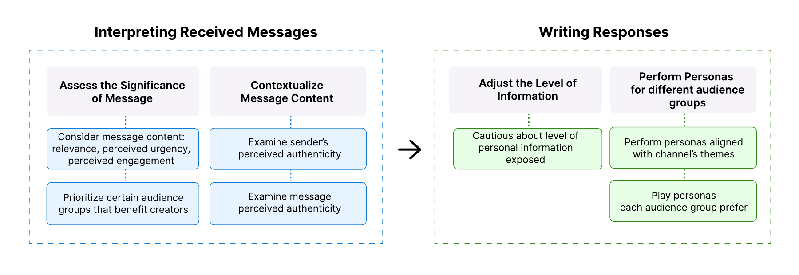
CHI 2025 Extended Abstracts
Understanding Content Creators' Struggles and Expectations of AI in Direct Messaging
This study identifies creators' challenges in managing direct messages and their expectations and concerns around AI-mediated communication.
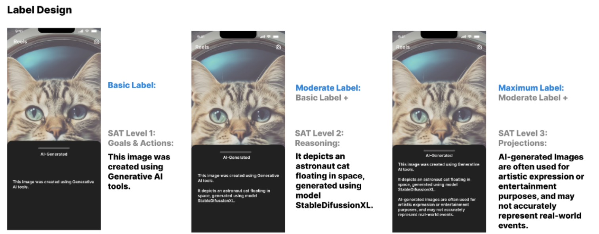
Experience
Research Experience
Cornell University (2024-Present) - Communication and Collaborative Technologies Lab - Advisor: Susan Fussell
Cornell University (2024-Present) - Creators and Platform Labor Working Group - Advisor: Brooke Duffy
University of Auckland (2025-2026) - Empathic Computing Lab - Advisor: Mark Billinghurst
HKUST(GZ) (2024-2025) - Spatial Intelligence and Immersive Experience Lab - Advisor: Chen Liang
HKUST (2021-2023) - Department of Management - Advisors: Melody Chao and Soljee Lee
Industry Experience
NYC Department for the Aging (Summer 2026) - PiTech Fellow
TikTok (Summer 2023) - User Research Intern
Industry Projects
IBM (Spring 2024) - User Researcher (Capstone Project)
Google (Fall 2023) - User Researcher (Capstone Project)
Off the Clock
In my free time, you will usually find me lifting/working out, gaming (though I do not really have time for Civilization anymore), getting absorbed in historical novels, cooking, and exploring restaurants.
Contact
I am always happy to connect about research, collaboration, and related opportunities. Let's chat!
- Emailjingruo@infosci.cornell.edu
- ProfilesGoogle Scholar / LinkedIn
Background sketch based on T137A Jack.